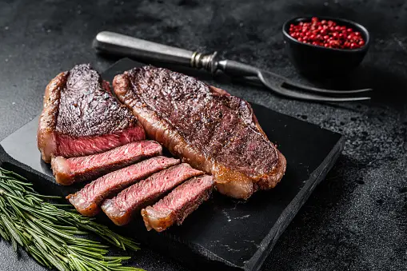

Steak Recipe

Description
Steak is a popular and mouthwatering dish made from high-quality cuts of beef, renowned for its rich flavor and tender texture. The preparation is relatively simple, involving seasoning the beef with salt and pepper, then grilling, pan-searing, or broiling it to the desired level of doneness. The result is a juicy and succulent piece of meat that can be served on its own or accompanied by various sauces and side dishes. Whether enjoyed at a fancy restaurant or a backyard barbecue, steak remains a beloved culinary delight cherished by meat enthusiasts worldwide.
Ingredients
- High-quality steak (such as ribeye, New York strip, or filet mignon)
- Salt
- Black pepper
- Olive oil or vegetable oil
- Optional: Garlic (minced or powdered) for additional flavor
- Optional: Butter (for basting the steak while cooking)
- Optional: Fresh herbs (such as rosemary or thyme) for seasoning
Steps
-
Season the Steak:
- Remove the steak from the refrigerator and let it come to room temperature for even cooking.
- Pat the steak dry with paper towels to ensure a good sear.
- Season both sides of the steak with salt and black pepper. Optionally, add minced or powdered garlic for additional flavor.
-
Preheat the Cooking Surface:
- For grilling: Preheat the grill to high heat (around 450-500°F or 230-260°C).
- For pan-searing: Preheat a cast-iron skillet or heavy-bottomed pan over medium-high heat.
- For broiling: Preheat the broiler in the oven.
-
Cook the Steak:
- For grilling or pan-searing: Add a drizzle of olive oil or vegetable oil to the cooking surface. Place the steak on the hot surface and cook to the desired level of doneness, flipping it once halfway through the cooking time. Use a meat thermometer to check the internal temperature: 125°F (52°C) for rare, 135°F (57°C) for medium-rare, 145°F (63°C) for medium, 160°F (71°C) for medium-well, or 170°F (77°C) for well-done.
- For broiling: Place the seasoned steak on a broiler pan or a wire rack set over a baking sheet. Cook the steak on the top oven rack, turning it halfway through the cooking time, until it reaches the desired level of doneness.
- Optional: Baste the steak with melted butter and fresh herbs during cooking for added flavor and moisture.
-
Rest and Serve:
- Once the steak is cooked to your liking, remove it from the heat source and let it rest for a few minutes to allow the juices to redistribute.
- Thinly slice the steak against the grain for maximum tenderness.
- Serve the deliciously cooked steak with your favorite side dishes and sauces.